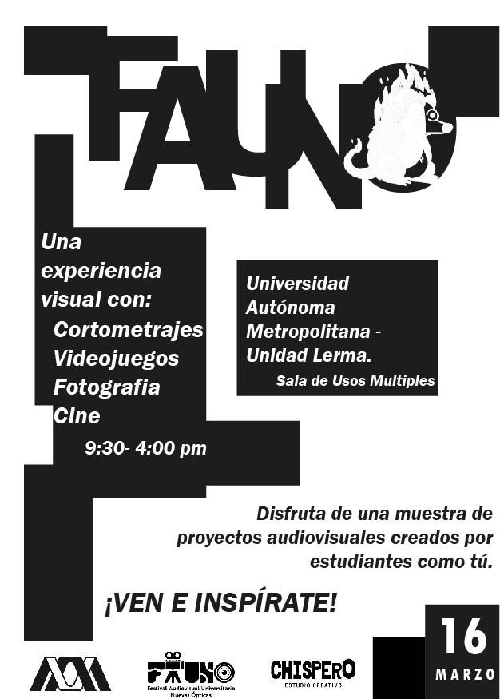

Pósters y convocatoria
FESTIVAL FAUNO

Equipo
Primera edición:
FAUNO es un proyecto que nace de la iniciativa de estudiantes de quinto trimestre de la Licenciatura en Arte y Comunicación Digitales,
para dar a conocer los trabajos del alumnado y de la comunidad universitaria en general.
Festival en el que se presentó fotografía, cortometrajes, y se hablo sobre cine y otros festivales y proyectos.